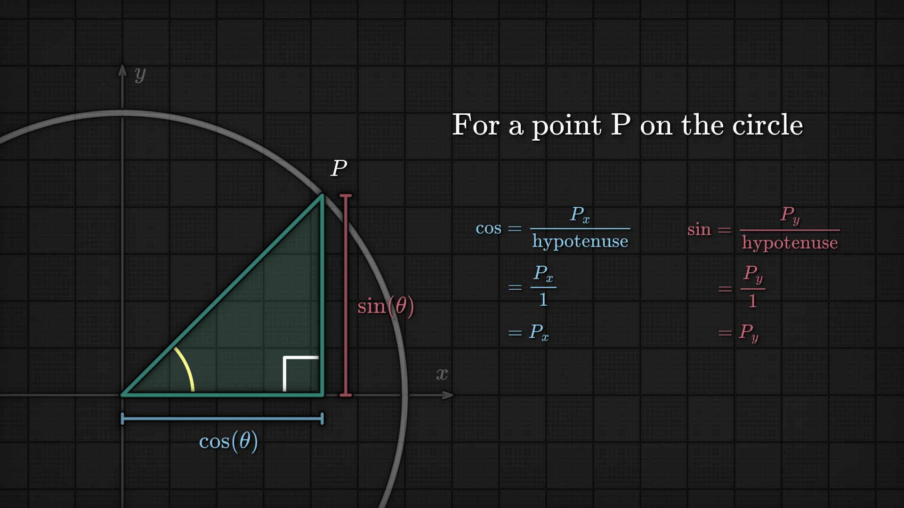
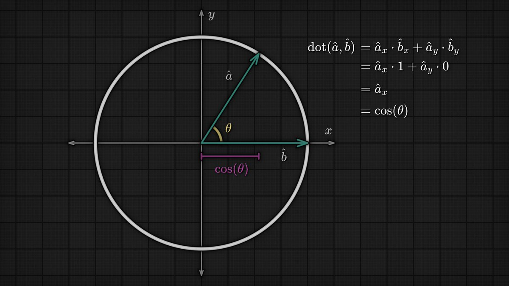

Game math is the layer between raw code and spatial intuition. The most useful pieces are not advanced theorems but a handful of geometric primitives that appear everywhere: the unit circle, sine/cosine, dot products, direction vectors, projections, and atan2.
The simplest useful fact in game math is that a point on the unit circle is:
P = (cos θ, sin θ)
Because the circle radius is 1, cos(θ) is the x-coordinate and sin(θ) is the y-coordinate. That makes trig much less mystical. On the unit circle, sine and cosine are not abstract ratios anymore — they are just coordinates.
Drag the slider to rotate the point around the unit circle. Watch cos and sin update as live x/y coordinates.

Once you have the unit-circle view, direction vectors become trivial:
direction = (cos θ, sin θ)
This is why trig shows up constantly in gameplay code:
Going the other way is just as important. atan2 is the practical inverse because it handles quadrants correctly and returns the signed angle of a direction vector:
θ = atan2(y, x)
For two normalized vectors â and b̂:
dot(â, b̂) = cos(θ)
That one identity explains most common uses:
1 means same direction0 means perpendicular-1 means opposite directionsIf only one vector is normalized, the dot product becomes the signed projection length:
dot(a, b̂) = |a| cos(θ)
So the dot product is not "just another formula." It is a fast way to ask: how much of vector a points along vector b?
That identity is why the dot product shows up everywhere in gameplay code: facing checks, FOV tests, projections, steering, and lighting all reduce to measuring alignment.

The classic FOV test:
dot(forward̂, toTarget̂) > cos(fov / 2)
This avoids expensive angle comparisons and works directly on vectors.
(cos θ, sin θ) to move something in the direction it is facingatan2 to rotate a character or camera toward a targetProjection logic is everywhere:
A lot of graphics and gameplay code gets simpler once you stop memorizing formulas and start treating vectors geometrically:
atan2 converts vectors back into anglesThat is enough to unlock a surprising amount of real game code.